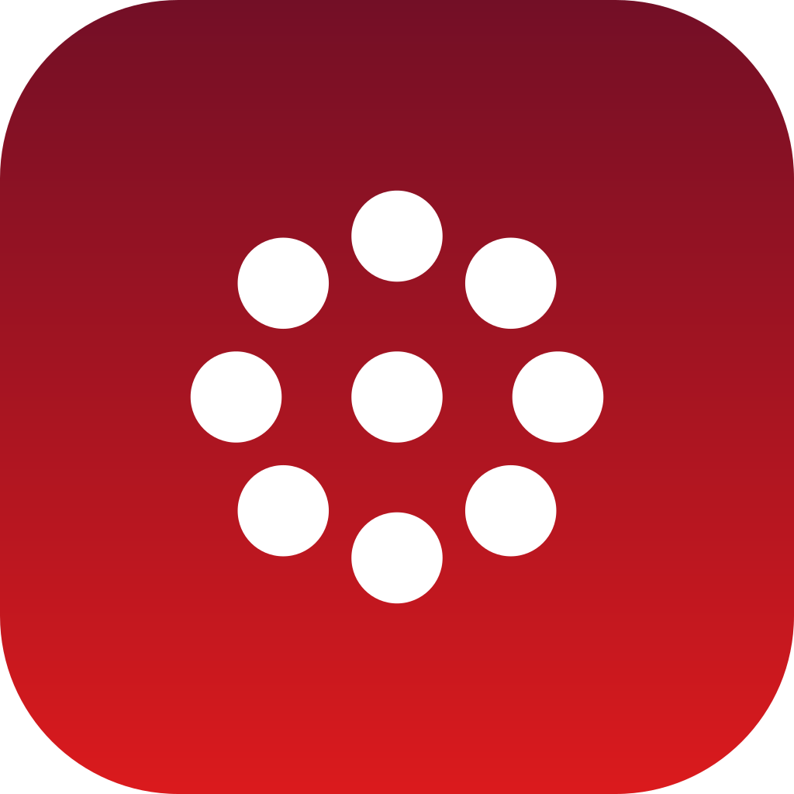

Weiß und zartes Grau tragen alles. Flächen trennen statt Linien, Glas ist einfach milchig. Rot taucht nur einmal auf: auf der Startseite.

Zeichen: 9er Round Liner, neun gleich große Punkte, acht um einen. Wortmarke Plus Jakarta Sans Regular als Pfade. Auf Hell schwarz, auf Dunkel oder Rot weiß. Schutzraum mindestens eine Zeichenbreite, Mindestbreite 72 px. Dateien und Konstruktion: logo.html, design/logo/.
Nur Plus Jakarta Sans Regular. Hierarchie über Größe und Grau, nie über Fett. Große Größen enger gesetzt (−4,5 %), Fließtext fast normal (−1,1 %). Zweite Satzhälfte gern grau.
Links: Toolbar auf dem Foto, Werkzeuge in einer Glaskapsel, „Stechen“ gleich hoch daneben. Rechts: die eine Stelle, an der Rot vorkommt (Startseite).
20 px in Buttons, 16 px in Chips, 24 px groß. Immer in Textfarbe, nie farbig.
Die zweite Stelle, an der Rot vorkommt: nur während des Scans, als Leuchten an der Kante. Weiches Band nach innen (44 px, atmet zwischen 45 und 75 %), dazu ein 2,5 px feiner Rand. Beides dreht sich langsam gegeneinander. In der Mitte das Punkt-Logo als Loader.